3350E vehicle direction control system vdc
- Path
- Descriptions > 33 BRAKING SYSTEM > 3350 DRIVE CONTROL' > 3350E vehicle direction control system vdc
- Kind
- system description
- Applies to
- engines: 1.6 TS, 2.0 TS; all production periods
- Interactive page
- https://sloeber94.github.io/elrnDB-a147/en/#/3022488
Applies to: engines: 1.6 TS, 2.0 TS; all production periods
CONSTRUCTION FEATURES
GENERAL VIEW
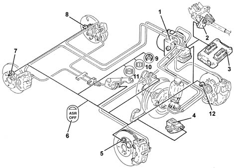
1 - ABS/VDC control unit 2 - Steering angle sensor 3 - Engine management control unit 4 - Yaw/lateral acceleration sensor 5 - Front right wheel sensor 6 - ASR off button 7 - Rear right wheel sensor 8 - Rear right wheel sensor 9 - VDC warning light 10 - EBD warning light 11 - ABS warning light 12 - Front left wheel sensor
SPECIFCATIONS
Function
Driving a car under all conditions that may lead to the physical limit of grip and thus of stability may be a difficult task for a normal driver even the car tends to be stable. To improve driving safety, it is therefore necessary to fit an electronic system able to help the driver in this difficult task.
Systems currently used to make driving safer under certain conditions are mainly ABS for braking control and TC and ASR/MSR systems. These systems control traction during acceleration by acting on the brakes (T.C.) and traction/drive torque during acceleration and over-run by acting on the brakes and engine control system motorised throttle body (ASR/MSR).
The VDC system (Vehicle Dynamic Control) incorporates all the functions listed above and optimises vehicle control with the addition of specific sensors:
- steering angle sensor on the steering wheel
- yaw/side acceleration sensor located near the centre of gravity beneath the central tunnel
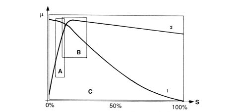
μ - wheel grip S - slip A - EBD intervention area B - ABS intervention area C - VDC intervention area 1 - Side force curve 2 - Longitudinal force curve
As may be seen from the grip/slip diagram, the VDC system covers a bigger area than a conventional ABS/EBD.
The VDC cannot be cut out because it is a safety system; the ASR/MSR function can, however, be cut out by means of a button on the central facia
VDC system intervention is indicated by a special warning light on the instrument panel node (Italian acronym = NQS)
COMPOSITION
Structure
The VDC system consists of:
- a special A.B.S.5.7 hydraulic/electronic control unit (with V.D.C. function)
- interface with the C-CAN line resident in the ABS control unit for communication with the engine management control unit, robotised gearbox and body computer
- magnetoresistive wheel speed sensors
- steering angle sensor with CAN interface (steering angle node)
- yaw/side acceleration sensor integrated within a single component
- brake fluid pressure sensor fitted to the ABS control unit
- VDC warning light controlled via CAN line
- ASR deactivation switch with warning light on button
OPERATION
Introduction
The VDC system continuously detects loss of longitudinal and transverse wheel grip under all driving conditions, from braking to acceleration, to ensure vehicle directionality and stability.
The VDC system is managed by a Bosch 5.7 ABS ECU integral with a special hydraulic control unit that makes it possible for the brake system to be operated independently of the driver.
The control unit processes the following signals:
- steering angle/steering wheel rotation speed
- side acceleration and yaw
- motorised throttle position
- wheel rpm
- hydraulic braking system pressure
and uses special algorithms in the software to obtain the values for dynamic control of the vehicle:
- longitudinal and transverse slip between wheels and road surface
- axle drift.
The system calculate actual vehicle dynamics from these values; and identifies all critical conditions due to environmental factors (e.g. surface with poor grip) or any mistakes made by the driver (e.g. panic situations) to restore the car to efficient handling conditions by adjusting the brakes and drive torque.
The system interfaces with:
- NCM for drive torque modulation,
- NCR (robotised gearbox node) for gear shift management
- NBC (body computer node) to transmit vehicle speed values and control warning lights.
Information is exchanged between these components by means of the C-CAN and B-CAN lines.
System diagnosis is carried out via a dedicated line (K line).
The system is linked to a power unit with a special brake pump; the pipes between brake pump and ABS control unit are also fitted with a Titaflex insert because the pipe diameter is bigger (6 mm) than normal pipes (4 mm). this is to prevent negative effects on VDC operation at low brake fluid temperatures.
The VDC comes on automatically when the vehicle is started up and cannot be switched off by the driver. the button on the central console turns off only the ASR function and only in recommended circumstances (see ASR system)
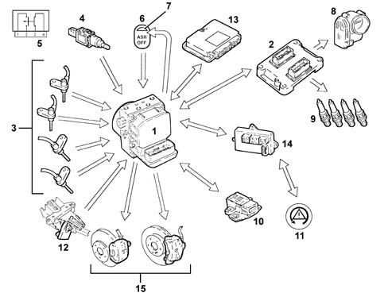
INPUT SIGNALS
- Wheel speed sensor (from direct line) (3)
- Brake pedal switch (4)
- Brake pedal switch wiring diagram (5)
- ASR button off (from direct line) (6)
- Engine control unit (2)
- Throttle angle position (from C-CAN line)
- Body computer (14)
- Handbrake lever position (from C-CAN line)
- Warning light status indicator (from C-CAN line)
- Yaw sensor (rotation around vehicle vertical axis (from direct line) (10)
- Lateral acceleration sensor (from direct line) (10)
- Steering wheel steering angle/rotation sensor ((from C-CAN line) (12)
- Robotised gearbox control unit (speed engaged status) (from C-CAN line) (13)
- Hydraulic system pressure sensor(from direct line) (1)
OUTPUT SIGNALS
- Brake pressure modulation command (15)
- Ignition advance reduction command (from C-CAN line) (9)
- Engine power management command (from C-CAN line) (8)
- Gear change inhibition (from C-CAN line) (13)
- Wheel speed signal for speedometer and mileometer (from C-CAN line) (14).
- VSO (vehicle speed) signal (14)
- VDC warning light control on panel (from C-CAN line) (11)
- ASR led off (7)
As explained previously, the VDC controls longitudinal vehicle slip and also transverse slip, i.e. vehicle lateral stability.
Vehicle lateral stability is provided by tyre reaction to lateral forces and depends on the strength with which the wheel grips the road surface.
A wheel's adhesive force depends on vertical load, which depends in turn on wheel situation (supporting or unladen) and friction coefficient, which depends in turn on surface and tyre conditions.
When the vehicle is moving in a straight line, the effect of side forces may be disregarded, unless external factors increase their intensity (e.g. wind gusts or changeover to a different surface). Conversely, when the car corners, side forces increase greatly due to the increase in centrifugal force.
The action of side forces brings about a change in wheel drift angle and thus a change in axle drift (drift angle = difference between required trajectory and actual trajectory).
The side forces do not act equally on all four wheels because the wheels are not subject to the same load conditions. Wheels are loaded differently in different situations. The following situations may occur:
- acceleration (lightening of front axle and loading of rear axle)
- braking (loading of front axle and lightening of rear axle)
- right/left bend (loading of outside wheels and lightening of inside wheels)
- cornering while accelerating/decelerating (combination of the above cases)
If the side forces acting on individual wheels vary, it follows that the resultant forces acting on the car axles also vary. This means that if side forces acting on the front axle prevail over the forces acting on the rear axle or viceversa, the vehicle's vertical axis (yaw axis) is subject to a rotatory force (moment)
The yawing moment affects car behaviour and generates a state of understeer or oversteer.
A vehicle is said to be understeered when the front axle drift angle increase to a greater extent than that of the rear axle when subject to increasing side acceleration. In this case, the car tends to go straight when turning a corner (it tends to take the curve wide).
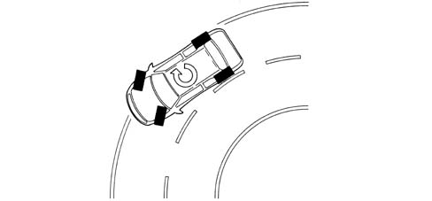
A car is said to be oversteered when the rear axle drift angle increases to a greater extent than that of the front axis with increasing transverse acceleration. In this case, the vehicle tends to spin around (the rear axle tends to go straight and the vehicle cuts the corner.
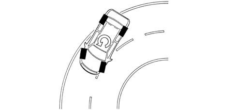
To keep the influence of side forces under control and thus limit the yawing moment, the ABS 5.7 control unit must firstly compute the vehicle behaviour set by the driver on the basis of:
- steering angle sensor/steering wheel rotation speed
- accelerator pedal position
- braking system pressure
after which the control unit assesses actual vehicle behaviour by means of:
- the sensors on the wheels (car speed/wheel speed)
- side acceleration sensor
- yaw sensor.
The above shows that the control unit is able to:
- perceive the driver's actions because steering wheel position shows the number of degrees by which (large radius or short radius bend) and the speed with which the steering wheel is turned (sudden or gradual turns). Throttle position and brake pressure also show whether the car is accelerating or braking. In other words, how the driver takes the corner or deviates from a straight trajectory.
- perceive actual vehicle behaviour on the basis of environmental variables e.g. slippery surface, car reactions to incorrect manoeuvres by the driver etc. in order to identify yawing moment and axle side slip by means of sensors on all four wheels and the yaw and side acceleration sensor.
These two operations are necessary to compare the mathematical model mapped in the control unit with actual car behaviour in order to identify vehicle status (understeer or oversteer) and decide the action to be taken on the brakes and engine
Understeering on corners
The control unit monitors to detect understeer (prevalence of front axle drift) and corrects car behaviour by braking the wheels on the inside of the bend to create an opposite moment in order to bring the car toward the middle of the bend and reducing drive torque if necessary.
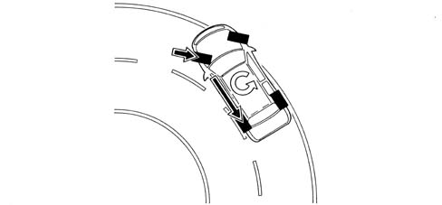
Oversteering on corners
The car detects the presence of oversteer (prevalence of rear axle drift) and corrects vehicle behaviour by braking the front wheel on the outside of the bend to create an opposite yawing moment, possibly augmented by an increase in the driving torque.
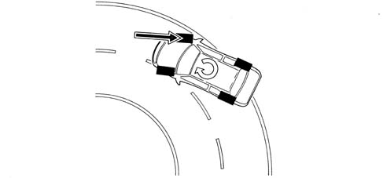
Abrupt changes in straight trajectory (swerving/overtaking)
In the case of abrupt changes in trajectory (e.g. overtaking/swerving, the control unit identifies possible oversteer or understeer conditions and correct vehicle trajectory as described above.
Abrupt change in straight trajectory (driving over different surfaces)
The control unit can preceive deviations from the trajectory and prevalence of axle drift, and corrects the trajectory with appropriate actions on the brakes and engine.
Brusque acceleration/deceleration
The control unit implements the ASR/MSR strategy it controls vehicle side acceleration and thus regulates the action on the front and rear brakes and driving torque more fully than on cars with ASR only.
Cutting out asr
If the ASR/MSR is cut out the following functions remain active:
- A.B.S./E.B.D.
- TC up to a speed of 40 km /h
- partial V.D.C.
Displaying vdc intervention
When the VDC system intervenes, a warning light on the control panel flashes (5 Hz c.c. 50%).
Diagnostic functions
The ABS 5.7 control unit is able to carry out automatic diagnosis on the system and if a fault is found is able to:
- deactivate the entire system
- deactive the system partially (maintaining the ABS/EBD function)
A list of anomalies detectable by the control unit, warning light statuses and recovery strategies is given below.
Error | ABS warning light | EBD warning light | VDC warning light | Recovery |
|---|---|---|---|---|
electrical fault in rh front sensor | ON | OFF | ON | R3 |
electrical fault in lh front sensor | ON | OFF | ON | R3 |
electrical error in rh rear sensor | ON | OFF | ON | R3 |
electrical error in lh rear sensor | ON | OFF | ON | R3 |
error in rh front sensor | ON | OFF | ON | R3 |
error in lh front sensor | ON | OFF | ON | R3 |
error in rh rear sensor | ON | OFF | ON | R3 |
error in lh rear sensor | ON | OFF | ON | R3 |
rh front ABS discharge solenoid | ON | ON | ON | R2 |
rh front ABS charge solenoid | ON | ON | ON | R2 |
lh front ABS discharge solenoid | ON | ON | ON | R2 |
lh front ABS charge solenoid | ON | ON | ON | R2 |
lh rear ABS discharge solenoid | ON | ON | ON | R2 |
lh rear ABS charge solenoid | ON | ON | ON | R2 |
rh rear ABS discharge solenoid | ON | ON | ON | R2 |
rh rear ABS charge solenoid | ON | ON | ON | R2 |
Main valve 1 (VLV1) | ON | ON | ON | R2 |
Main valve 2 (VLV2) | ON | ON | ON | R2 |
Pilot valve 1 (USV1) | ON | ON | ON | R2 |
Pilot valve 2 (USV2) | ON | ON | ON | R2 |
Pump motor | ON | OFF | ON | R3 |
Valve relay | ON | ON | ON | R2/R5 |
NO - NC brake light switch | ON | OFF | ON | R3 |
Side acceleration sensor (AY) | OFF | OFF | ON | R4 |
Yawing sensor | OFF | OFF | ON | R4 |
Brake fluid pressure sensor | ON | OFF | ON | R3 |
Lambda 6 (magnetic wheel malfunction) | ON | ON | R1 | |
NOTB (implementation anomaly) | ON | OFF | ON | R5/R3 |
Steering angle sensor | OFF | OFF | ON | R4 |
CAN-BUS network | OFF | OFF | ON | R4 |
Engine CAN message errors | OFF | OFF | ON | R4 |
Junction | ON | ON | ON | R1 |
Supply voltage | ON | ON | ON | R2 |
Variant Coding (incorrect vehicle configuration received from CAN network) | ON | ON | ON | R1 |
Communication with fault warning lights | ON | ON | ON | ON |
R1 - System deactivation
R2 - VDC/ASR,ABS,EBD deactivation
R3 - VDC/ASR,ABS deactivation
R4 - VDC/ASR deactivation
R5 - Inhibition of VDC/ASR and ABS during malfunction
R6 – Store fault without disabling system
Warning light operation
The ABS control unit activates warning lights as follows:
- with VDC on, the panel warning light is off and the ASR VDC button warning light is off
- with ASR off, the VDC warning light on the panel is off but a message appears on the Dot matrix to indicate ASR off and the button warning light comes on
- with VDC activated, the panel warning light flashes and the button warning light is off
- with VDC faulty, the panel warning light is on and a message appears on the Dot matrix
Component description
Hydraulic system operation
The hydraulic unit on the version with V.D.C. comes with 4 additional solenoid valves.
When activated, the inlet solenoid valve (normally closed) can receive the additional quantity of fluid required to increase the pressure and brake the wheel/s.
The operating solenoid valve (normally open), when activated, allows the modulated pressure produced by the pump to be maintained in the circuit.
When the VDC does not intervene, the ECU:
- does not activate the inlet solenoid (N.C.) (2).
- does not activate the operating solenoid (N.0.) (3).
In this way the system operates like the Bosch 5.7 ABS 3340A abs check/adjustment devices.
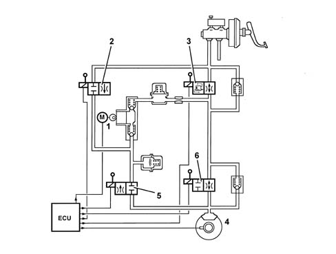
During V.D.C. intervention, the ECU:
- activates the hydraulic aggregate pump (1)
- activates the inlet solenoid (N.C.) (2)
- activates the operating solenoid (N.O.) (3).
Therefore the pressure generated by pump (1) then reaches the brake calipers and is modulated, upon a command by the electronic control unit, by the de-pressurzing (5) and pressurizing (6) solenoid valves.
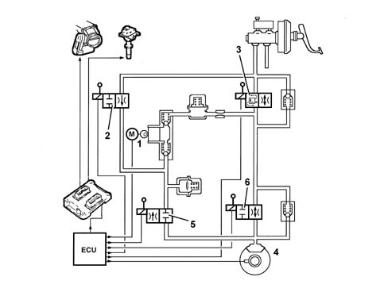
COMPONENT DESCRIPTION
Electrohydraulic unit
Composition
Structure
The hydraulic control unit consists of an electronic control unit and a hydraulic control unit.
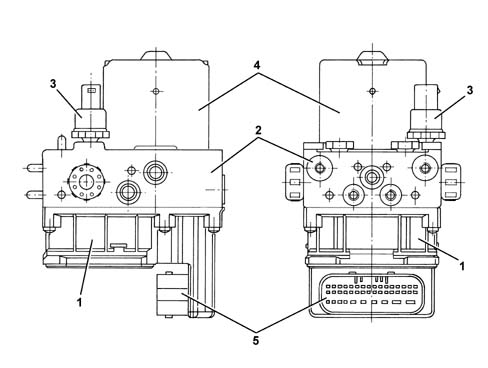
1 - Electronic control unit 2 - Hydraulic control unit 3 - Brake fluid pressure sensor 4 - Accelerator pump unit 5 - 42 pin connector
Electronic control
Specifications
Function
The electronic control unit is responsible for:
- downloading data from the wheel rpm sensors
- storing control parameters defined during the preparation of the vehicle
- storing the control software
- processes downloaded data
- controls the braking process
- detecting failures at the braking system components
- storing fault codes and activating ABS/EBD/ASR/VDC warning lights
- transmitting and receiving data via the diagnostic connector
- communicating with the engine control unit
- monitoring the ASR/MSR/VDC process
- sending and receiving data via the C-CAN line
- communicating with the robotised gearbox (NCR).
Pin out
The control unit is connected to the electrical system via a 42 pin connector.
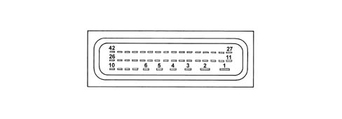
1 - Power earth 2 - + 30 power supply 3 - N.C. 4 - N.C. 5 - Signal earth 6 - +30 power source 7 - N.C. 8 - Acceleration/yaw sensor 9 - Side acceleration sensor test 10 - Acceleration/yaw sensor reference 11 - Diagnostic line K 12 - Front left sensor signal 13 - Rear left sensor positive 14 - Rear left sensor signal 15 - Front right sensor positive 16 - Front right sensor signal 17 - N.C. 18 - Button ASR warning light 19 - N.C. 20 - N.C. stop switch 21 - Acceleration/yaw sensor earth 22 - N.C. 23 - +15 power source 24 - CAN H line 25 - Brake fluid pressure sensor earth 26 - Brake fluid sensor signal 27 - Passive ASR switch 28 - Front left sensor positive 29 - N.C. 30 - Rear right sensor positive 31 - Rear right sensor signal 32 - N.O. stop switch 33 - N.C. 34 - N.C. 35 - N.C. 36 - N.C. 37 - Vehicle speed VSO (recovery) 38 - N.C. 39 - Side yaw/acceleration sensor power supply 40 - CAN L Line 41 - Yaw sensor signal 42 - Brake fluid pressure sensor positive
Principle diagram
PRINCIPLE WIRING DIAGRAM
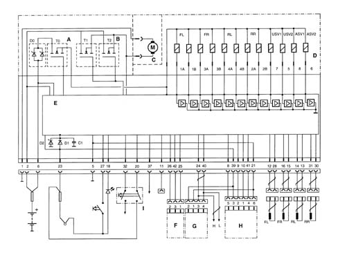
A - Solenoid relay B - Pump motor C - Pump motor D - Valve unit E - Electronic control unit F - Brake fluid pressure monitoring sensor G - Steering angle sensor H - Lateral yaw/acceleration sensor I - NO/NC brake pedal sensor FL - Front left sensor FR - Front right sensor RL - Rear left sensor RR - Rear right sensor 1A-1B - Left front wheel solenoid 34-3B - Left front wheel solenoid 4A-4B - Left rear wheel solenoid 2A-2B - Right rear wheel solenoid 5 - Pilot solenoid 6 - Intake solenoid 7 - Pilot solenoid 1 8 - Intake solenoid 1
Hydraulic control unit
Specifications
Function
Responsible for modulating the pressure of the fluid at the brake calipers via two solenoid valves with the following stages:
- brake fluid pressure increase
- brake fluid pressure maintenance
- brake fluid pressure discharge.
Composition
Structure
The electro-hydraulic control unit consists of:
- twelve two-way solenoid valves
- a dual circuit electric recovery pump
- two low pressure accumulators
- two high pressure accumulators
- brake fluid pressure sensor.
The letters indicating to which caliper and to which brake pump outlet they should be connected at stamped on the control unit at each outlet.
- RR = to the right rear brake (pipe marked with a light blue coloured band)
- LR = to the left rear brake (pipe marked with a green coloured band)
- RF = to the right front caliper (pipe marked with a yellow coloured band)
- LF = to the left front caliper (pipe marked with a white coloured band)
- MC1 = from the main circuit/flange side pump (pipe marked with a black or pink coloured band when the pipe polyammide resin is black)
- MC2 = from the secondary circuit/front pump (pipe marked with a brown coloured band).
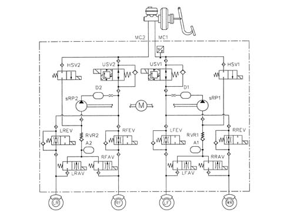
Steering sensor
Characteristics
Operation
The steering angle sensor detects steering wheel angle and turning speed and makes the data available to the C-CAN network (steered angle sensor node).
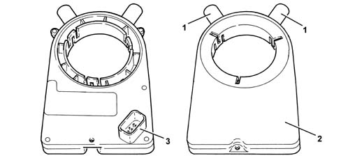
1 - Pins to adapt to rh and lh drive vehicles 2 - Sensor case 3 - Connector
Composition
Location
The sensor is fitted to the steering column and comes with a pin that is connected to a grooved bracket that allows the steering column to move axially.
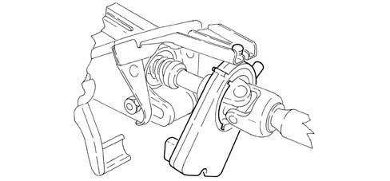
Pin out
The sensor comes with a four pin connector, two pins are used to supply the sensor and two for the C-CAN line.
Pin 1, Earth
Pin 2, +15 positive
Pin 3, C-CAN H Line
Pin 4, C-CAN H Line
Operation
The sensor measures the following using its internal electronic system:
- steering column angular position
- steering column rotation speed.
This information is processed directly by the sensor and made available to the brake node via the C-CAN network.
The steering column (6) operates two measuring sprockets (1) via a toothed crown wheel (7). These measuring sprockets incorporate magnets (2). The AMR elements (3), whose resistance varies in accordance with the direction of the magnetic field, record the angle position of the magnets. The analogue values measured are sent to a microprocessor via an A/D converter. The measuring sprockets have a different number of teeth and so change their rotational position in accordance with the steering wheel's position.
The total steering angle may be calculated from the combination of the two actual angles.
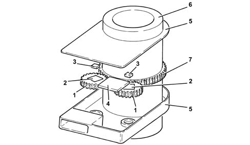
1 - Measuring sprockets 2 - Magnets 3 - AMR elements 4 - Microprocessor 5 - Sensor casing 6 - Steering column 7 - Toothed crown wheel
After a few steering wheel rotations, both measuring sprockets return to their original position.
These two measuring sprockets and their measuring principle allow a larger measuring range of steering wheel turns to be exploited, without having to use a rev counter. There is a mathematical ratio between the steering wheel angle and the angles of the two measuring sprockets. A mathematical function can be used to determine the absolute steering angle from the positions of the measuring sprockets. This function can also be used to correct faults and check the plausibility of the individual signals.
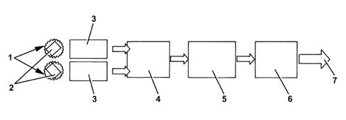
1 - Measuring sprockets 2 - Magnets 3 - AMR elements 4 - A/D converter 5 - Microprocessor 6 - CAN interface 7 - C-CAN networks bus
The sensor has an angular measurement range of 1560° and an angular resolution of 0.1 °.
For the sensor to operate, it must be reset to zero in relation to the steering wheel position. This is done using a Tester (see instructions provided with the EXAMINER device).
The sensor comes with an automatic diagnosis function and is able to check the plausibility of information processed.
Yaw/lateral acceleration sensor
Characteristics
Operation
The yaw/lateral acceleration sensor detects rotations about the vehicle vertical axis (yaw) and measures side accelerations.
It is connected directly to the ABS control unit.
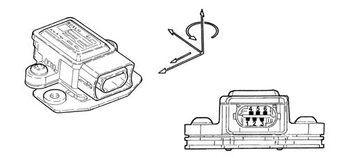
Sensor operational specifications are as follows:
Supply voltage:
- Minimum value 8.2 V
- Maximum value 16V
- Rated value 12V
Operating temperature:
- Minimum value -40° C
- Maximum value +85° C
Current uptake at 12 V:
- Rated value 70mA
Yaw sensor:
- Measurement range +/-100 °/s
- Resolution +/-0.3 °/s
Side acceleration sensor:
- Measurement range +/-1.8 g
Composition
The sensor consists of a plastic case that encloses the sensitive parts that detect lateral yaw and acceleration and also an electronic control system.
The sensor has a six-pin connector, with all pins connected.
Pin1, Yaw sensor reference signal
Pin2, ABS control unit yaw sensor test signal
Pin3 - 12V sensor supply
Pin4 - Yaw signal in °/Sec
Pin5 - Side acceleration signal in G
Pin6 - Earth
Location
The sensor is located at the centre of gravity beneath the central console near the Air Bag control unit.
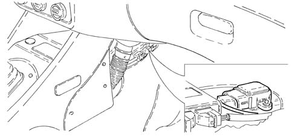
Operation
The sensor is supplied directly by the ABS control unit and supplies a yaw and acceleration signal simultaneously via its sensitive elements.
The yaw signal is processed directly by the sensor and sent to the ABS control unit with a superimposed reference signal.
Yaw signal range is between:
- lower limit 0.65V
- upper limit 4.35V
- reference signal 2.5V
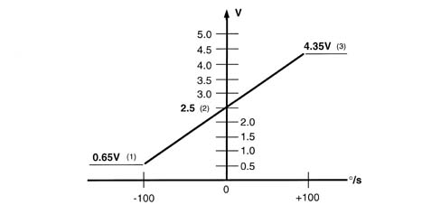
1 - Upper limit 2 - Reference signal 3 - Lower limit
The ABS control unit supplies an alternating signal to the sensor for testing and safety functions.
Active sensors
Characteristics
For active sensors see ABS system 3340 A(B.S. ANTI-LOCK BRAKING SYSTEM .).
ASR activation button
Specifications
Function
For ASR deactivation button see [ 3350A anti - spin regulation devices).
Topics linked from this page (3)
- 3340 A(B.S. ANTI-LOCK BRAKING SYSTEM .)
- 3340A abs check/adjustment devices
- 3350A anti - spin regulation devices